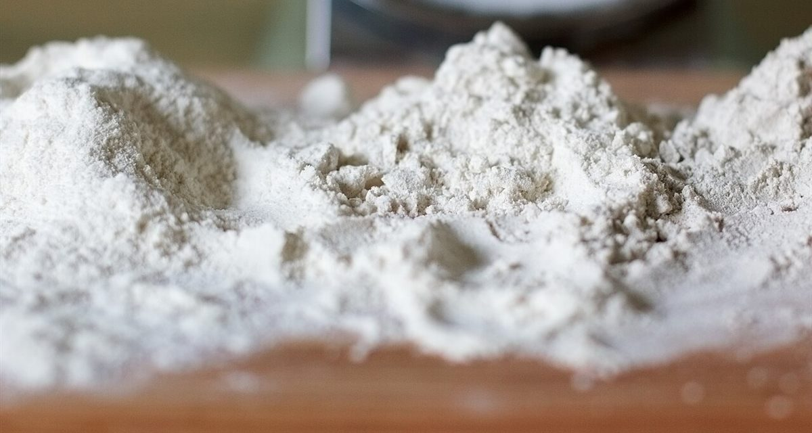

制作側の連想
「うえ」の音から、二段の札を思いついた。
このサイトのテーマは、制作側が屋号の響きから連想したものです。お店の理念・由来とは無関係です。「うえ」という音から「上」を思い浮かべ、上の段と下の段が入れ替わる二段の札に、5つのページを見立てました。屋号の由来は分かりません。
道具と素材(イメージ)
上段に道具、下段に素材。
写真は、うきは市やお店の写真ではありません。物や素材のクローズアップとして選んだ、撮影地不明のフリー素材です。




ご案内
お店のこと(確認できたものだけ)
| 所在地 | 〒839-1321 福岡県うきは市吉井町744-1 |
|---|---|
| 電話 | 090-3347-2618 |
| 営業時間 | 準備中 |
| 定休日 | 準備中 |
| ご予約 | 準備中 |
| 駐車場 | 準備中 |
| SNS | Instagram @cafe_uemura |